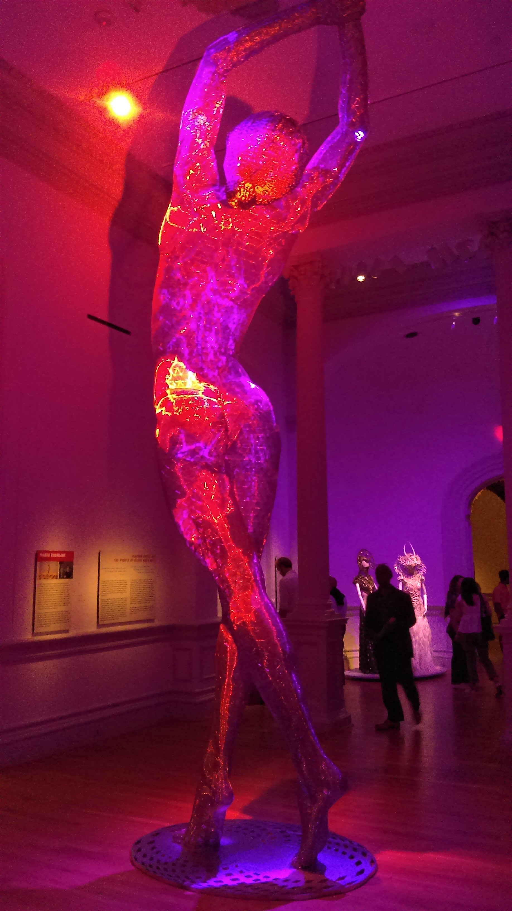
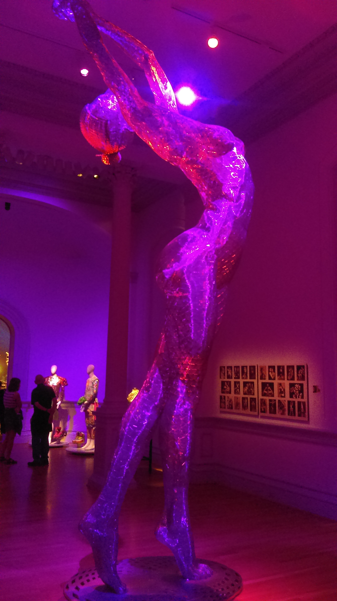
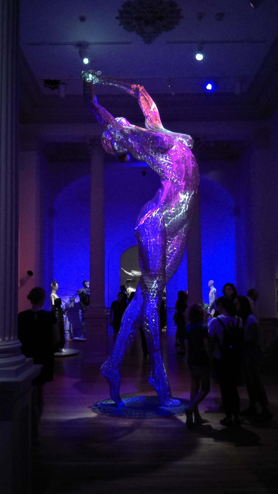
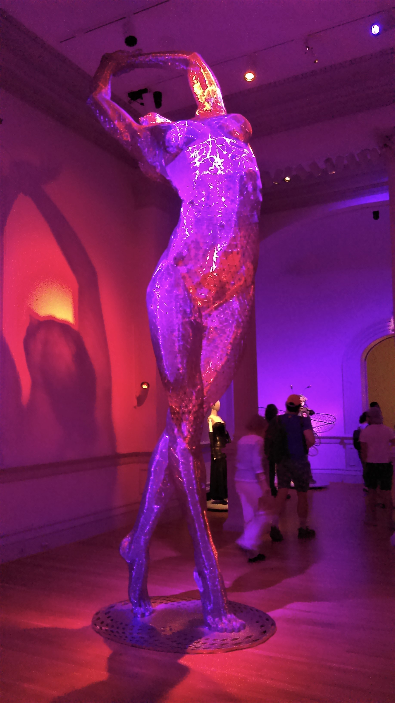
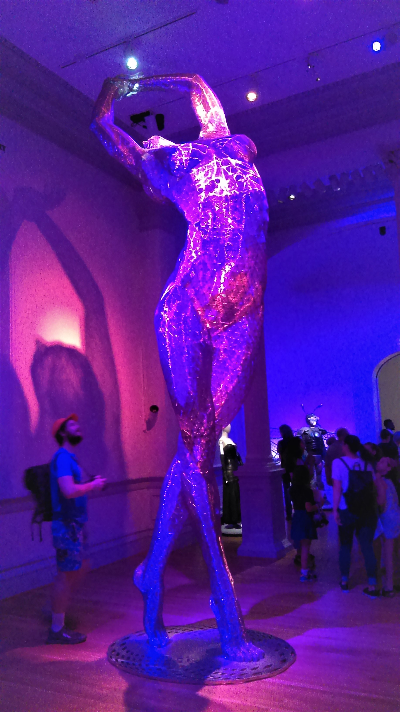
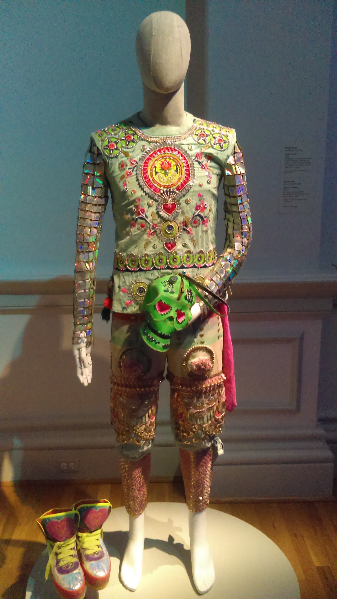
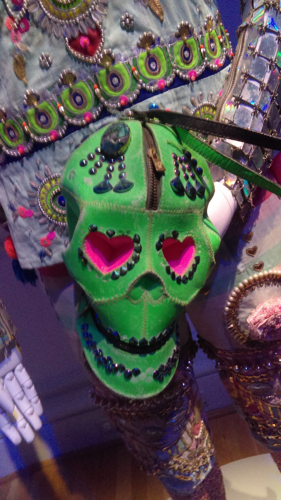
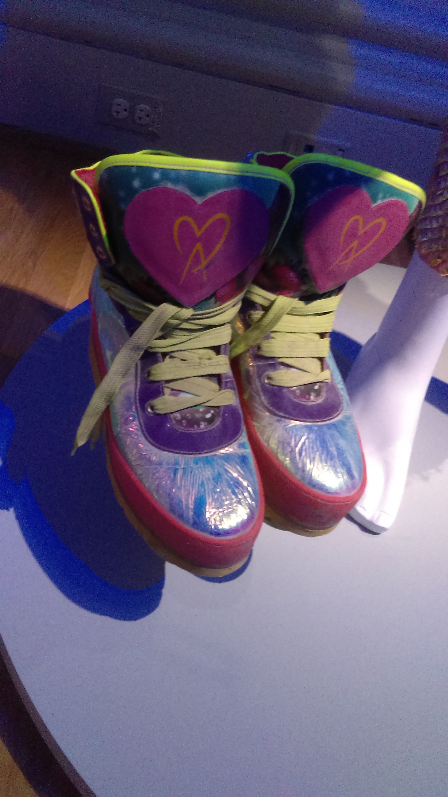

The First Art Car
The first art car driven at burning man is known as the “5:04 PM Earthquake Car”. It’s a 1978 Olds Cutlass Supreme from San Francisco. On October 17th, 1989, at 5:04 pm, the Loma Prieta earthquake struck San Francisco. When a brick wall fell and crushed the back half of an Olds Cutlass parked by Clayton and Paige streets. Michael Michael (AKA Danger Ranger) saw it, his creative wheels began turning, “I bet that will still run,” he thought. He placed a note on the car offering to buy it, and within a few days was his. With the addition of a new coat of paint and a license plate bearing the exact time of the earthquake, it became an avant-garde art piece, and a attestation to the powerful forces of nature.
Sculptures

Truth is Beauty, by Marco Cochran

Truth is Beauty, by Marco Cochran

Truth is Beauty, by Marco Cochran

Truth is Beauty, by Marco Cochran

Truth is Beauty, by Marco Cochran
Burning Man Outfits



